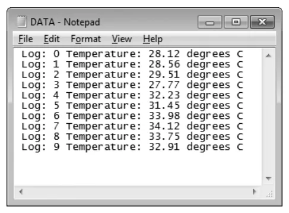
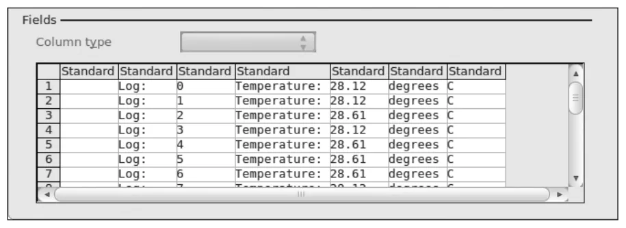
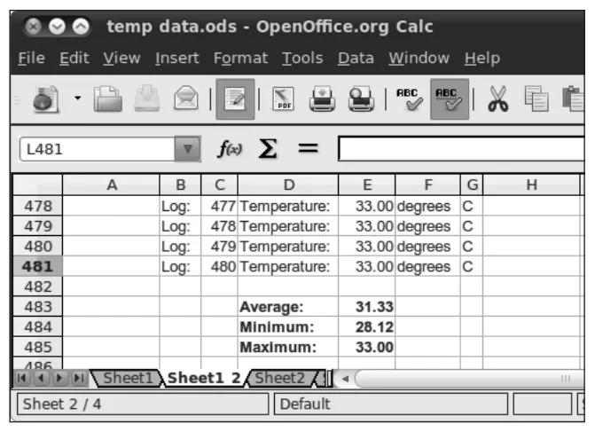

Now that you know how to record data, let’s measure the temperature every minute for 8 hours using our microSD card shield and the TMP36 temperature sensor that we introduced in Chapter 4. We’ll combine the functions for writing to the microSD card from Project 29 with temperature measurement from Project 27.
The Hardware
The following hardware is required:
- One TMP36 temperature sensor
- One breadboard
- Various connecting wires
- MicroSD card shield and card
- Arduino and USB cable
Insert the microSD card into the shield, and then insert the shield into the Arduino. Connect the left (5V) pin of the TMP36 to Arduino 5V, the middle pin to analog, and the right pin to GND.
The Sketch
Enter and upload the following sketch:
// Project 30 - Creating a Temperature-Logging Device
#include <SD.h>
float sensor, voltage, celsius;
void setup()
{
Serial.begin(9600);
Serial.print("Initializing SD card...");
pinMode(10, OUTPUT);
// check that the microSD card exists and can be used
if (!SD.begin(8))
{
Serial.println("Card failed, or not present");
// stop sketch
return;
}
Serial.println("microSD card is ready");
}
void loop()
{
// create the file for writing
File dataFile = SD.open("DATA.TXT", FILE_WRITE);
// if the file is ready, write to it:
if (dataFile)
{
for ( int a = 0 ; a < 481 ; a++ ) // 480 minutes in 8 hours
{
sensor = analogRead(0);
voltage = (sensor * 5000) / 1024; // convert raw sensor value to
// millivolts
voltage = voltage - 500;
celsius = voltage / 10;
dataFile.print(" Log: ");
dataFile.print(a, DEC);
dataFile.print(" Temperature: ");
dataFile.print(celsius, 2);
dataFile.println(" degrees C");
delay(599900); // wait just under one minute
}
dataFile.close(); // mandatory
Serial.println("Finished!");
do {} while (1);
}
}The sketch will take a little more than 8 hours to complete, but you can alter this time period by lowering the value in delay(599900).
After the sketch has finished, remove the microSD card and open the log file in a text editor, as shown in Figure 8-26.

For more serious analysis of the captured data, delimit the lines of text written to the log file with spaces or colons so that the file can be easily imported into a spreadsheet. For example, you could import the file into OpenOffice Calc by choosing Insert4Sheet From File to produce a spread-sheet like the one shown in Figure 8-27, which you could then analyze the data of, as shown in Figure 8-28.


The temperature examples can be hacked to suit your own data analysis projects. You can use these same concepts to record any form of data that can be generated by an Arduino system.